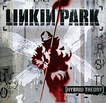
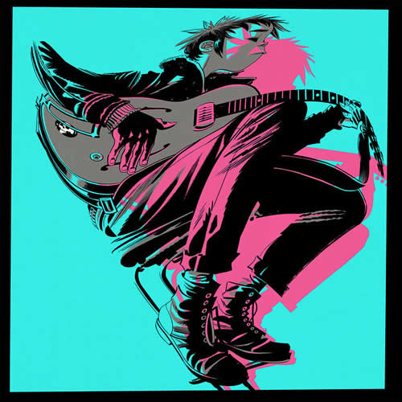

Meus Albúns Musicais Favoritos
Blurryface
by Twenty One Pilots
Músicas:
- 1. Heavydirtysoul
- 8. Doubt
- 2. Stressed Out
- 9. Polarize
- 3. Ride
- 10. We Don't Believe What's on TV
- 4. Fairly Local
- 11. Message Man
- 5. Tear in My Heart
- 12. Hometown
- 6. Lane Boy
- 13. Not Today
- 7. The Judge
- 14. Goner
Ouça em:

Hybrid Theory
by Linkin Park
Músicas:

- 1. Papercut
- 7. By Myself
- 2. One Step Closer
- 8. In the End
- 3. With You
- 9. A Place for My Head
- 4. Points of Authority
- 10. Forgotten
- 5. Crawling
- 11. Cure for the Itch
- 6. Runaway
- 12. Pushing Me Away
Ouça em:
Sempiternal
by Bring Me The Horizon
Músicas:
- 1. Can You Feel My Heart
- 8. Seen It All Before
- 2. The House of Wolves
- 9. Antivist
- 3. Empire(Let Them Sing)
- 10. Crooked Young
- 4. Sleepwalking
- 11. Hospital for Souls
- 5. Go to Hell, for Heaven's Sake
- 12. Join the Club
- 6. Shadow Moses
- 13. Deathbeds Shadow Moses
- 7. And the Snakes Start to Sing
Ouça em:
The Now Now
by Gorillaz
Músicas:

- 1. Humility(feat. George Benson)
- 8. Magic City
- 2. Tranz
- 9. Fire Flies
- 3. Hollywood(feat. Snoop Dogg & Jamie Principle)
- 10. One Percent
- 4. Kansas
- 11. Souk Eye
- 5. Sorcererz
- 6. Idaho
- 7. Lake Zurich
Ouça em: